Materials
These control how the model will display.
Viewing game materials
You can view the game shaders/materials real time by toggling it in the view settings.
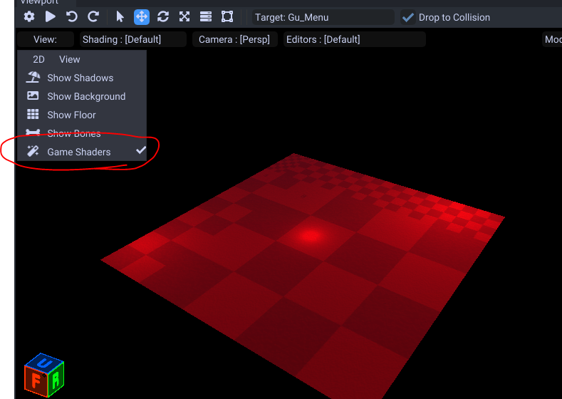
Presets
When you import your model it will default to a simple opaque material. You will need to change it if you want transparency or additional effects.
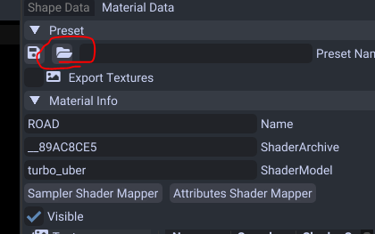
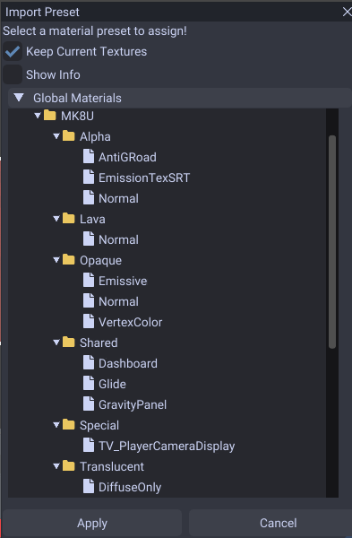
Here you can use the in tool provided presets.
| Name | Effect | Includes Textures/Animations |
|---|---|---|
| Alpha/AntiGRoad | Supports alpha and has anti gravity trail colors | ☐ |
| Alpha/EmissionTexSRT | Supports alpha and emissive texture and animating SRT from tex_mtx0 | ☐ |
| Alpha/Normal | Supports alpha and normal, spec and bake texture maps | ☐ |
| Lava/Normal | Lava | ☑ |
| Opaque/Normal | A well rounded default material. | ☐ |
| Opaque/Emissive | Supports emissive textures. | ☐ |
| Opaque/VertexColor | Supports using vertex colors (model must include these or it will be black). | ☐ |
| Shared/Dashboard | Dashboard panel | ☑ |
| Shared/Glider | Glider panel | ☑ |
| Shared/GravityPanel | Gravity panel | ☑ |
| Special/TV_PlayerCameraDisplay | A material that can display the current camera (used by the TV displays). | ☑ |
| Translucent/DiffuseOnly | A simple see through material. | ☐ |
| Water/Normal | Water | ☑ |
You want to use the materials under the Alpha folder for transparency.
If you need something see through you can use the materials under the Translucent folder.
Gliders, gravity and dash panels are all both inside here to use aswell.
To save your own from an existing map you can type in a name and click the save button.
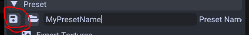
This will save it to your Presets\Materials folder in the application's folder. You can adjust the folders inside to categorize them.
Right Click Menu
When you right click the material in the tree you can export, replace, rename, copy and remove the material.
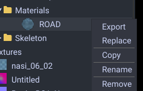
If you export with this method is is highly suggested you use the .zip extension. This will transfer shader contents over
Texture Maps
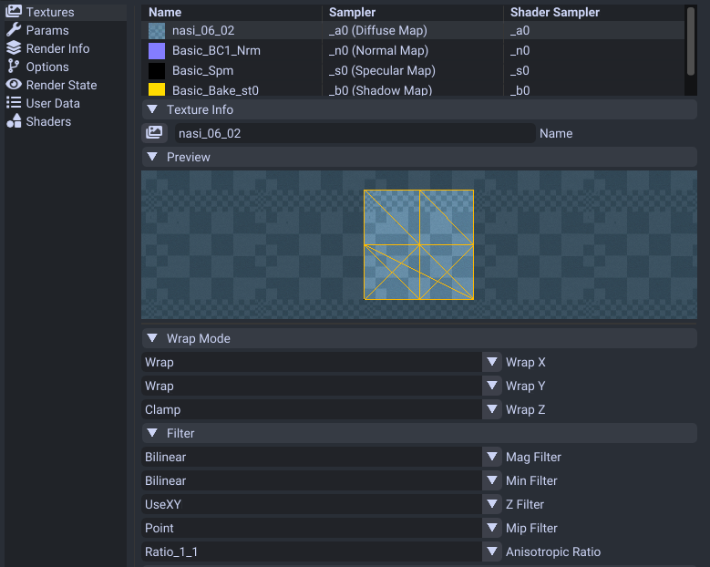
This is how you assign textures/images to your material.
Types of texture maps:
| Name | Effect |
|---|---|
| Diffuse | The main texture map. This will give your material the color. |
| Normal Map | A texture that provides lighting details and makes it appear more 3D. |
| Specular Map | Controls the shininess of the material. White is full reflection and black is none. |
| Shadow Map | Controls shadows. For courses it uses the red channel for ambient occusion and green for shadows. |
| Light Map | Controls lights. This map should only include raw lights with full black ambient color. |
| Emission Map | Controls glow/light intensity. |
| Transmission Map | Controls light intensity illuminating from a source like cloth. |
To change texture you can either double click the item in the list or press this button.
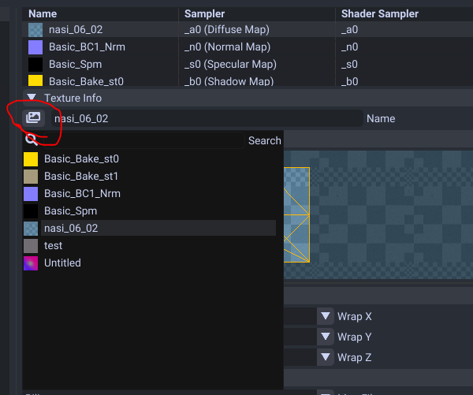
Animating
If you want to animate these please refer to this material animation guide.
Alpha
To support alpha on your textures make sure to select a material that supports alpha.
Wrap Mode
This controls how the texture will repeat when outside the UV borders.
- Wrap (repeats at border)
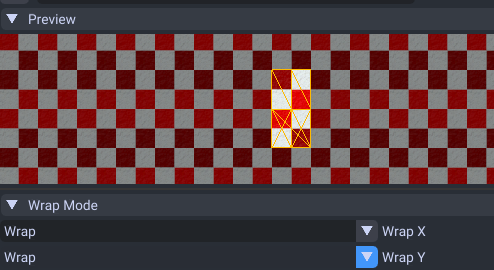
- Mirror (mirrors image at border)
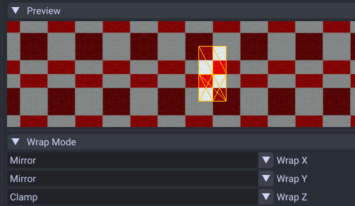
- Clamp (clamps to last pixel)
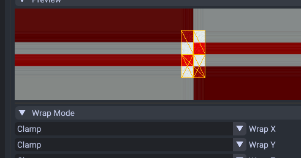
Filter Mode
This mode is how the image should be displayed from a distance. By default it uses a blurry filter (bilinear) but you may want to have pixel perfect view (point)
- Linear
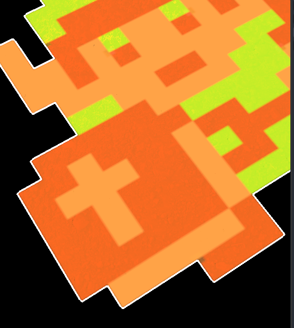
- Point
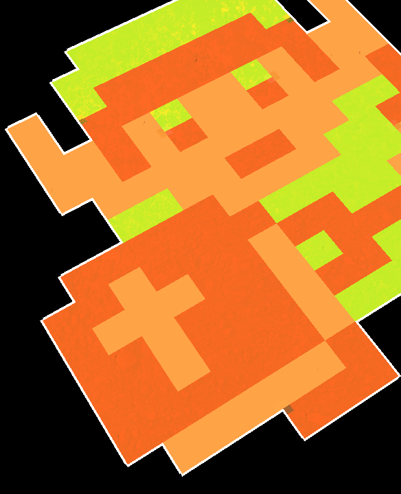
Parameters
These configure the uniform data on how the material will be rendered.
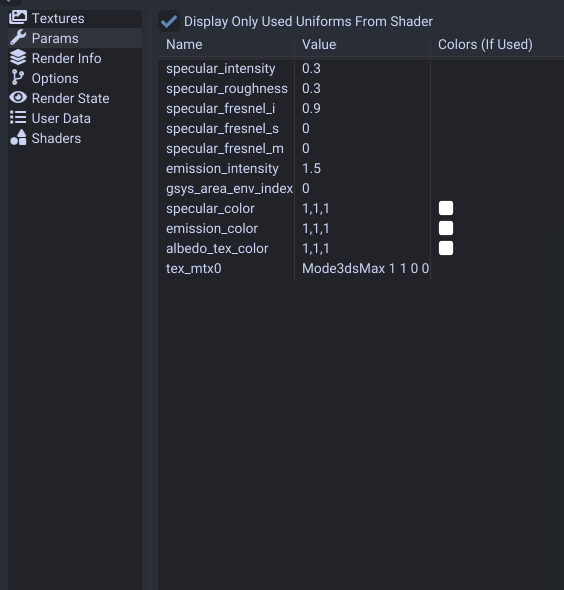
While there is alot of parameters, the ones provided by the presets may be fine to keep as is.
If you have game shaders enabled you can view what parameters are used by the shader.
If a material parameter is not in this list that you need you may need to use a different preset.
Important ones are tex_mtx0, tex_mtx1, and tex_mtx2. These control the UV transform per texture slot.
Animating
If you want to animate these please refer to this material animation guide.
Fix Z Flickering
If you have a model on top of another you can force it to draw on top with no flickering.
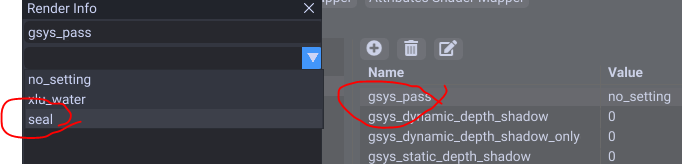
Go to the render info section. Double click gsys_pass and set the value to seal.
Render Info
These configure various render effects.
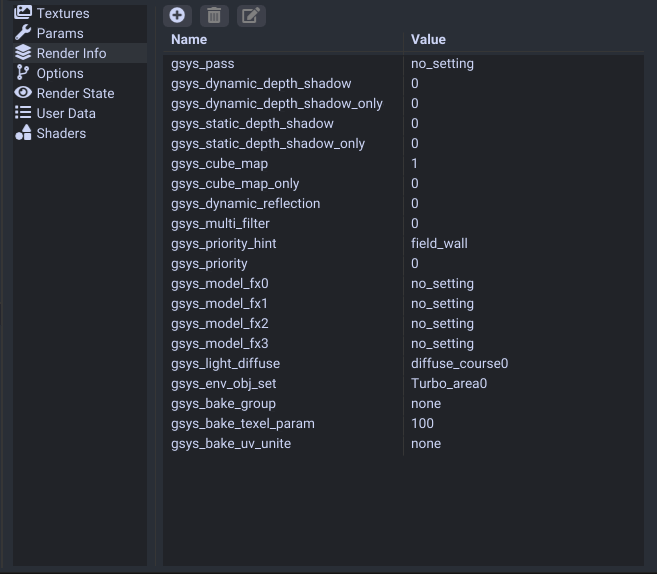
| Name | Effect |
|---|---|
| gsys_pass | Controls render depth order. If set to seal it draws over things. |
| gsys_dynamic_depth_shadow | Casts shadows. |
| gsys_dynamic_depth_shadow_only | Casts shadows and model is hidden. |
| gsys_static_depth_shadow | Casts shading when an object or player is under. |
| gsys_static_depth_shadow_only | Casts shading when an object or player is under and model is hidden. |
| gsys_cube_map | Determines to display in the reflection cubemaps. |
| gsys_cube_map_only | Determines to display in the reflection cubemaps and model is hidden. |
| gsys_dynamic_reflection | Unknown. Possibly controls real time reflections? |
| gsys_priority_hint | Some sort of draw order. field_wall or field_floor for courses. |
| gsys_light_diffuse | The lightmap to use for area env lighting. |
| gsys_env_obj_set | The area set to use (configures bloom per area) |
Render Info (Switch)
MK8D removes render state section from wii u and stores the settings in the render info section.
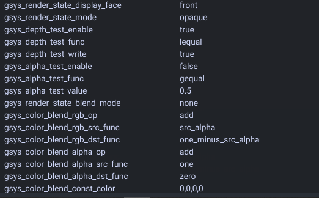
| Name | Effect |
|---|---|
| gsys_render_state_display_face | Determines what to display. both displays both faces. |
Render State (Wii U Only)
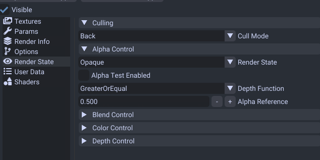
This area you can change the cull state. If you set it to None you can see both sides of your model.
This also controls the state (opaque, translucent, alpha) of your material. However you cannot edit the render state without changing to another preset.
Shader Options
This section controls what effects the material uses.
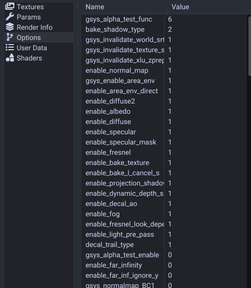
This CANNOT be edited as these settings configure how the shader was compiled.
You can still however look at this to understand what settings are used.
For a more technical explaination on how these work you can check out the technical material docs.
Shader Attribute/Sampler Remapping (Advanced)
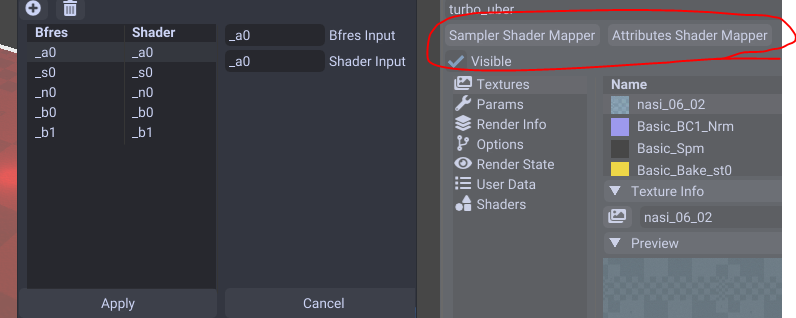
This determines how the game will use bfres samplers/attributes for the shaders.
For example you could use _u0 for all uv layer attributes for the shader.
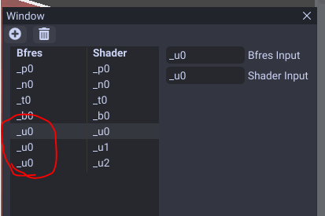
This would make all the shader UV layers use the first UV layer in bfres.